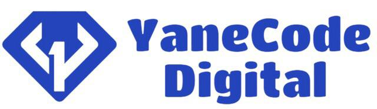
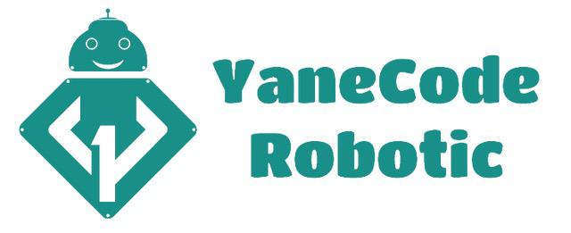
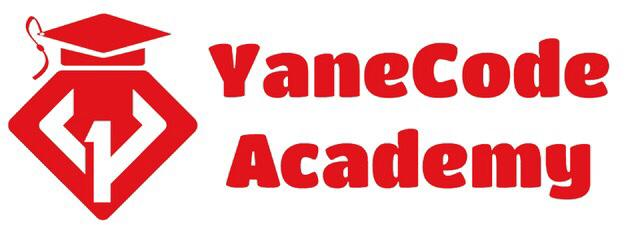

Entreprise YaneCode :
1. Présentation générale :
YaneCode digital est un agence digitale baseé à Safin, dont l'objectif est d'aider les TPE,PME et les indépendants à creér des solutions numériques répondant au besoin cible de ses clients.

En cette année 2022, YaneCode Digital, a vu le démarrage de deux autres nouvelles branches :
. YaneCode Robotic
. YaneCode Academy
 
YaneCode Robotic est une boutique en ligne qui vend des équipements robotiques Arduino, Raspberry, etc..., elle propose à
ses clients, la possibilité de commander différentes quantités selon leur bespion(https://robotic.yanecode.com/),en assurant
une bonne qualité du produit.
YaneCode Academy (https://academy.yanecode.com/), est une plateforme de formations en ligne certifiantes, a pour but d'initier les étudiants ou bien les diplôés à acquérir de nouvelles compétences dans le monde de l'informatique(développement web/ dev mobile/ design/ Robotic) pour une meilleure insertion dans le marché du travail.
2. Domaines des services :
Dev Web | Dev Desktop | Dev Mobile | E-commerce |
IA / iOT | Cloud | Sales Force | Motion Graphique |
Réalisé par: SALIMI Ikram © YaneCode 2022